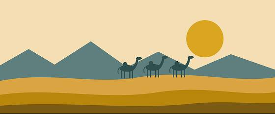

<html>
  <head>
    <link rel="stylesheet" href="index.css" />
  </head>
  <body></body>
</html>
<header class="header">
  <div class="banner">
    <div class="one">
      <span class="banner-top-text"
        >NOW OPEN · [OPENING DATE] – [CLOSING DATE]</span
      >
    </div>
    <div class="two">
      <span class="banner-text">Voices of the Silk Road</span>
    </div>
    <div class="three">
      <span class="banner-bottom-text"
        >A journey through trade, art and ideas</span
      >
    </div>
    <nav>
      <ul class="nav">
        <li class="nav-list"><a href="#" title="Overview">Overview</a></li>
        <li class="nav-list"><a href="#" title="Highlights"> Highlights</a></li>
        <li class="nav-list">
          <a href="#" title="Plan Your Visit"> Plan Your Visit</a>
        </li>
        <li class="nav-list"><a href="#" title="Tickets">Tickets</a></li>
      </ul>
    </nav>
  </div>
</header>
<div class="wrapper">
  <aside class="aside">
    <div class="aside-cont">
      <h3 class="aside-h">At a Glance</h3>
      <ul>
        <li class="aside-list">Curator: [Curator name]</li>
        <li class="aside-list">Galleries: [Number]</li>
        <li class="last-li aside-list">Visit time: [About 1 hour]</li>
      </ul>
      <hr />
      <h3 class="aside-h">Visitor Tips</h3>
      <ul>
        <li class="aside-list">Book tickets ahead</li>
        <li class="aside-list">Arrive early</li>
        <li class="last-li aside-list">Try the audio guide</li>
      </ul>
      <hr />
      <h3 class="aside-h">From the Curator</h3>
      <ul>
        <li class="aside-list">[A short quote about why this</li>

        <li class="last-li aside-list">exhibition matters]</li>
      </ul>
    </div>
  </aside>
  <main class="main">
    <section class="about">
      <h1>About the Exhibition</h1>
      <div class="img-cont">
        
        <p>
          For centuries, merchants carried silk, spices and stories across
          continents. This exhibition brings together objects, maps and everyday
          treasures to show how trade connected people and shaped the world we
          know.
        </p>
      </div>
    </section>
    <section class="featured">
      <h2>Featured Highlights</h2>
      <p>
        Painted Ceramic Jar – a merchant's storage vessel <br />
        Woven Silk Panel – patterns from distant workshops <br />
        Bronze Trade Scale – weighing goods fairly <br />
        Hand-drawn Route Map – the road ahead <br />
        Spice Chest – flavors that crossed borders
      </p>
    </section>
  </main>
</div>
<footer class="footer">
  <h3 class="footer-h">Come and explore history with us!</h3>
  <div class="footer-nav">
    <div><span>Visit  |  Collections  |  Back to top</span></div>
    <br />
    <div>
      <span>© 2026 [Museum Name] · Built with HTML & CSS</span>
    </div>
  </div>
</footer>
